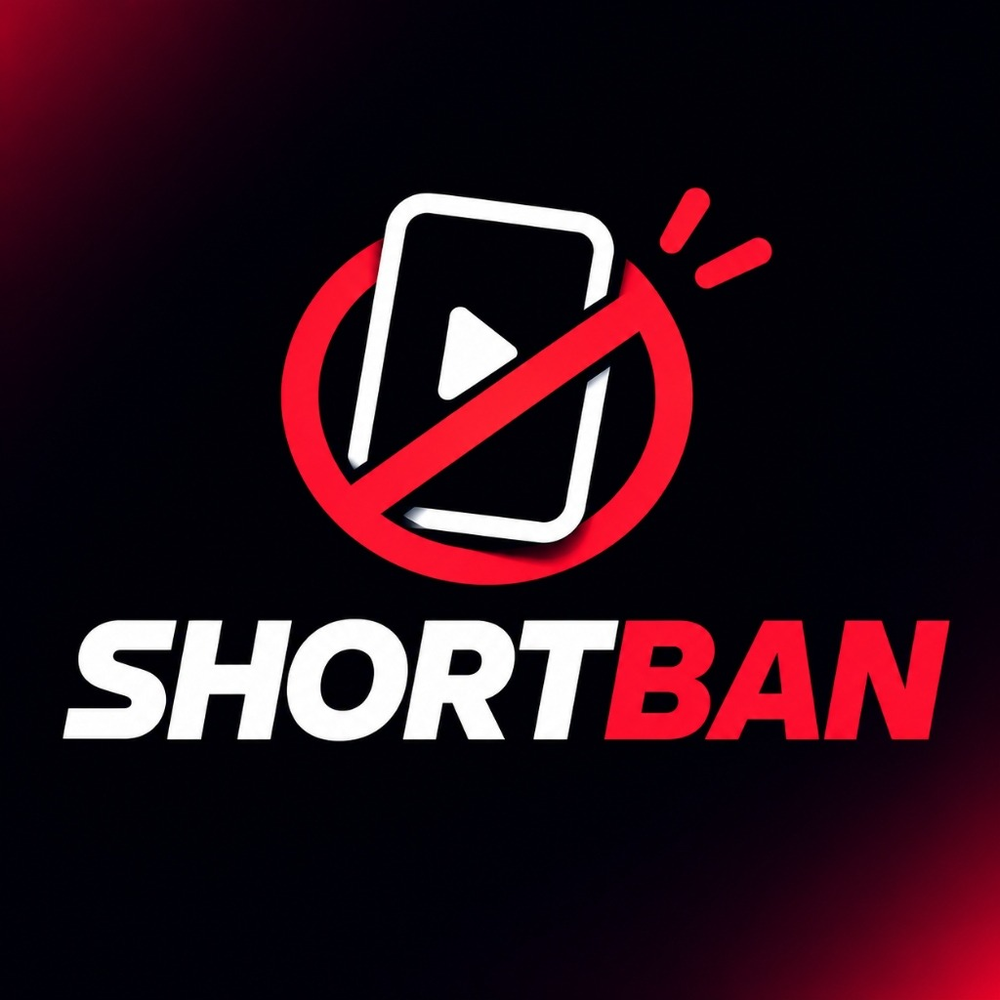

SHORTBAN Gizlilik Politikası / Privacy Policy
ShortBan (com.scrollblock.app ve ShortBan Web/PC Tarayıcı Eklentisi), kullanıcıların dijital refahını ve odaklanmasını korumak amacıyla kısa video akışlarını (Instagram Reels, TikTok Sizin İçin akışı, YouTube Shorts) ve isteğe bağlı olarak yorum pencerelerini kısıtlayan bir odaklanma aracıdır. Gizliliğiniz bizim için en temel önceliktir.
Özet Taahhüt: ShortBan hiçbir kişisel verinizi, ekran görüntünüzü, mesajlarınızı, şifrelerinizi, klavye girişlerinizi veya gezinme geçmişinizi toplamaz, kaydetmez, uzak sunuculara göndermez ve üçüncü taraflarla paylaşmaz. Tüm işlemler %100 cihazınızın içinde (on-device) gerçekleşir.
ShortBan Android uygulaması, temel işlevini yerine getirebilmek için Android'in AccessibilityService API'sini kullanır:
com.instagram.android, com.zhiliaoapp.musically, com.ss.android.ugc.trill, com.google.android.apps.youtube) ve ekrandaki arayüz bileşenlerinin görünüm kimlikleri (View ID) cihaz belleğinde anlık olarak kontrol edilir.
Uygulama yalnızca kullanıcının kendi tercihlerini (hangi platformların engelleneceği, günlük mola süresi/limiti, engellenen toplam akış sayacı ve isteğe bağlı 4 haneli PIN kodunun SHA-256 özeti) cihazın kendi yerel hafızasında (SharedPreferences / chrome.storage.local) saklar. Uygulamayı sildiğinizde bu veriler tamamen silinir.
ShortBan içerisinde hiçbir reklam SDK'sı, kullanıcı takip aracı (tracker) veya üçüncü taraf analitik servisi bulunmamaktadır. Yalnızca uygulama sürüm kontrolü için GitHub üzerindeki herkese açık version.json dosyası sorgulanabilir; bu sorguda hiçbir kullanıcı veya cihaz verisi gönderilmez.
ShortBan, ebeveyn kontrolü amacıyla kullanılan 4 haneli PIN kilidini yalnızca cihaz içinde şifrelenmiş (SHA-256 hash) olarak tutar. Çocuklar dahil hiçbir kullanıcıdan kişisel bilgi talep edilmez.
Gizlilik politikamızla ilgili her türlü soru ve talebiniz için GitHub deposu (github.com/sytex10/scrollblock) veya vsolken.com/shortban üzerinden bizimle iletişime geçebilirsiniz.
ShortBan (com.scrollblock.app and ShortBan Browser Extension) is a digital wellbeing and focus utility designed to help users block addictive short-form video feeds (Instagram Reels, TikTok For You feed, YouTube Shorts) and optional comment sections.
Zero Data Collection Guarantee: ShortBan does not collect, store, transmit, or share any personal data, screen content, messages, passwords, keystrokes, or browsing history. All detection happens 100% locally in real-time on the user's device.
AccessibilityService API solely to detect when a short-form video player (Instagram Reels, TikTok feed, YouTube Shorts) or comment sheet is opened on the screen, and to automatically redirect the user back to a safe tab or perform a back navigation action according to the user's settings.
User settings (toggle states, break timers, block counters, and the local SHA-256 hash of the optional 4-digit PIN) are stored strictly on the device using Android SharedPreferences. No analytics SDKs, ad networks, or tracking libraries are included in the app.
If you have any questions regarding this Privacy Policy, please reach out via github.com/sytex10/scrollblock or https://vsolken.com/shortban.